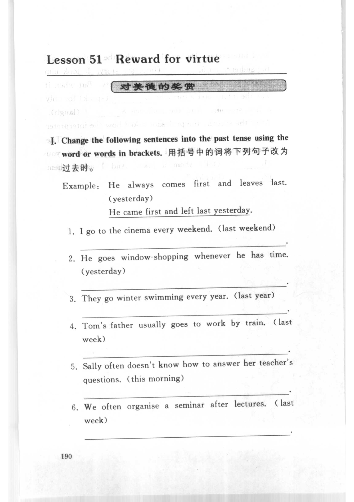
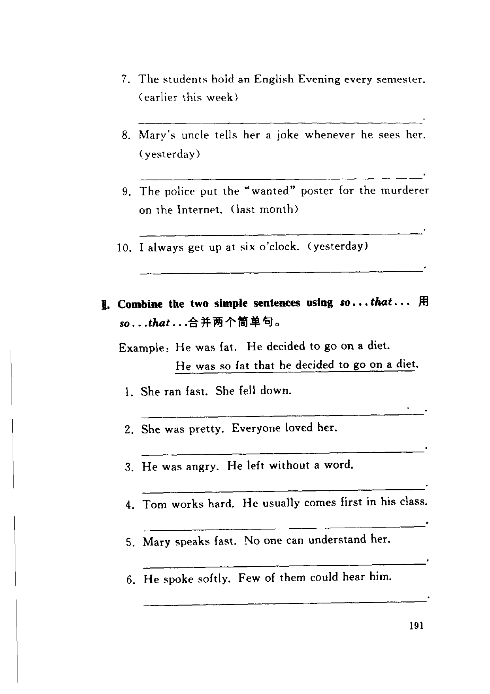
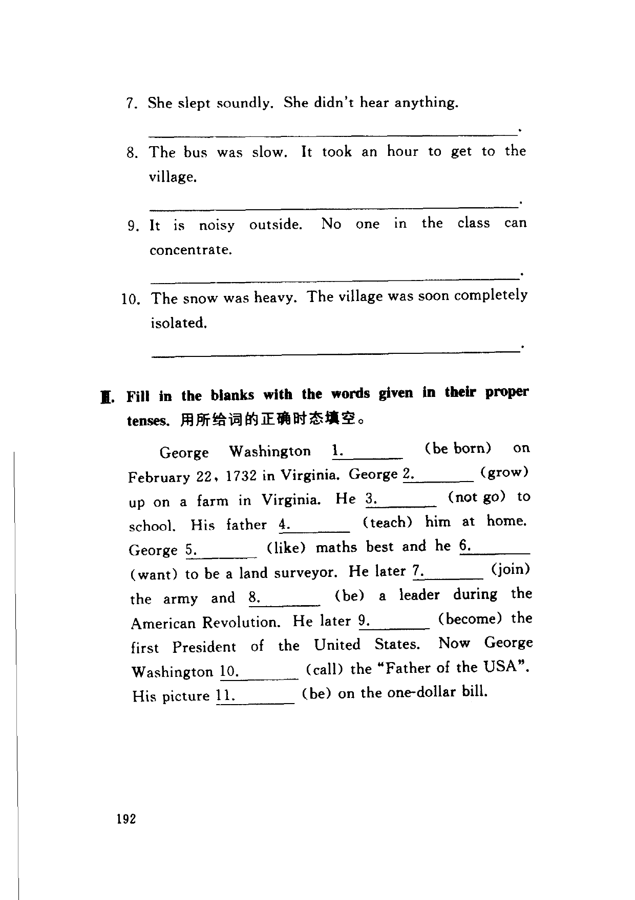

Grammar exercises · 语法练习
I. Change the following sentences into the past tense using the word or words in brackets.
用括号中的词将下列句子改为过去时。
Example: He always comes first and leaves last. (yesterday)
He came first and left last yesterday.
-
I. Past tense — I go to the cinema every weekend. (last weekend)
-
I. Past tense — He goes window-shopping whenever he has time. (yesterday)
-
I. Past tense — They go winter swimming every year. (last year)
-
I. Past tense — Tom’s father usually goes to work by train. (last week)
-
I. Past tense — Sally often doesn’t know how to answer her teacher’s questions. (this morning)
-
I. Past tense — We often organise a seminar after lectures. (last week)
-
I. Past tense — The students hold an English Evening every semester. (earlier this week)
-
I. Past tense — Mary’s uncle tells her a joke whenever he sees her. (yesterday)
-
I. Past tense — The police put the “wanted” poster for the murderer on the Internet. (last month)
-
I. Past tense — I always get up at six o’clock. (yesterday)
II. Combine the two simple sentences using so...that...
用so...that...合并两个简单句。
Example: He was fat. He decided to go on a diet.
He was so fat that he decided to go on a diet.
-
II. So...that — She ran fast. She fell down.
-
II. So...that — She was pretty. Everyone loved her.
-
II. So...that — He was angry. He left without a word.
-
II. So...that — Tom works hard. He usually comes first in his class.
-
II. So...that — Mary speaks fast. No one can understand her.
-
II. So...that — He spoke softly. Few of them could hear him.
-
II. So...that — She slept soundly. She didn’t hear anything.
-
II. So...that — The bus was slow. It took an hour to get to the village.
-
II. So...that — It is noisy outside. No one in the class can concentrate.
-
II. So...that — The snow was heavy. The village was soon completely isolated.
III. Fill in the blanks with the words given in their proper tenses.
用所给词的正确时态填空。
George Washington 1. (be born) on February 22, 1732 in Virginia. George 2. (grow) up on a farm in Virginia. He 3. (not go) to school. His father 4. (teach) him at home. George 5. (like) maths best and he 6. (want) to be a land surveyor. He later 7. (join) the army and 8. (be) a leader during the American Revolution. He later 9. (become) the first President of the United States. Now George Washington 10. (call) the “Father of the USA”. His picture 11. (be) on the one-dollar bill.
-
III. Proper tense — George Washington
1.(be born) -
III. Proper tense — George
2.(grow) -
III. Proper tense — He
3.(not go) -
III. Proper tense — His father
4.(teach) -
III. Proper tense — George
5.(like) -
III. Proper tense — he
6.(want) -
III. Proper tense — He later
7.(join) -
III. Proper tense — and
8.(be) -
III. Proper tense — He later
9.(become) -
III. Proper tense — Now George Washington
10.(call) -
III. Proper tense — His picture
11.(be)
Original images · 原图对照
Expand a page to compare it with the transcription. Open the original in a new tab to zoom in.
展开原图核对文字，也可以在新标签页打开原图放大查看。
Book page 190 · Exercise I (past tense, example and items 1–6)
Open original · 打开原图 ↗ Download original · 下载原图


Book page 191 · Exercise I (items 7–10) and Exercise II (so...that, example and items 1–6)
Open original · 打开原图 ↗ Download original · 下载原图


Book page 192 · Exercise II (items 7–10) and Exercise III (proper tenses, 11-blank passage)
Open original · 打开原图 ↗ Download original · 下载原图


Your notes and answers
Use this space for longer responses or exercises that do not have an individual answer box.